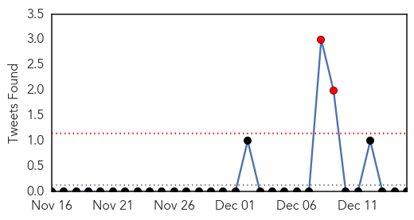
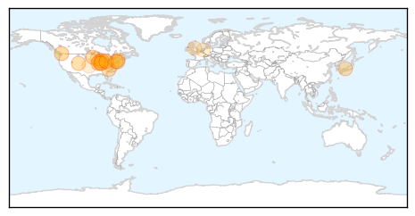
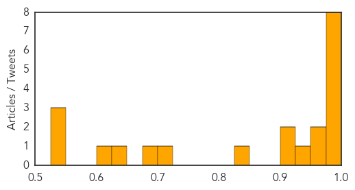
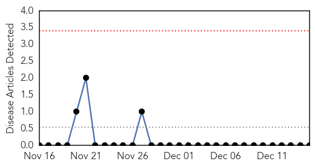

Influenza
30-Day Web Trend
12 alerts, 0 warnings

30-Day Twitter Trend
2 alerts, 0 warnings

Article Locations
Article Confidences
Top Articles:
- 1.000
- Flu Cases Reported in Colorado
- 0.997
- Health Director Still Encouraging Flu Shots Despite ‘Shift’ In Virus
- 0.995
- Cape Fear Valley to restrict visitors in attempt to control flu virus
- 0.992
- Flu prevention and treatment: a Q&A with MetroHealth infectious disease specialist
- 0.991
- Despite flu vaccine confusion, experts say it still helps
- 0.991
- Rise in flu cases reported in Kent County; vaccinations urged
- 0.991
- Flu Season Underway in Illinois
- 0.983
- Health director explains mutated flu strain
- 0.962
- Hospitals now enforcing visitor restrictions
- 0.957
- Flu bug leads to high absentee rate in Oak Park elementary schools
- 0.949
- Bird Flu Could Occur Anywhere, Says Japanese Official
- 0.917
- Washtenaw County already hitting peak flu numbers
- 0.909
- Health Officials: Not Too Late To Get A Flu Vaccine
- 0.838
- St.Vincent implements temporary visitor restriction policy to protect against influenza spread
- 0.708
- Experts debate research pause, gain-of-function issues
- 0.695
- Mission now within 'restricted zone' for poultry movement
- 0.626
- Bird flu threatens vancouver Christmas dinners as turkeys perish
- 0.602
- Wisconsin health officials push for flu shots before the holidays
- 0.545
- Wild birds possible source of H5N8
- 0.533
- B.C. poultry industry grapples with turkey shortfall after avian flu cull
- 0.530
- Table-egg layer barn in Langley, B.C., becomes 10th farm infected with avian flu
Top Tweets:
-
No tweets found for Dec 15, 2014
Hemmorhagic Fever
30-Day Web Trend
0 alerts, 0 warnings

30-Day Twitter Trend
0 alerts, 0 warnings

Article Locations

Article Confidences

Top Articles:
-
No articles found for Dec 15, 2014
Top Tweets:
-
No tweets found for Dec 15, 2014